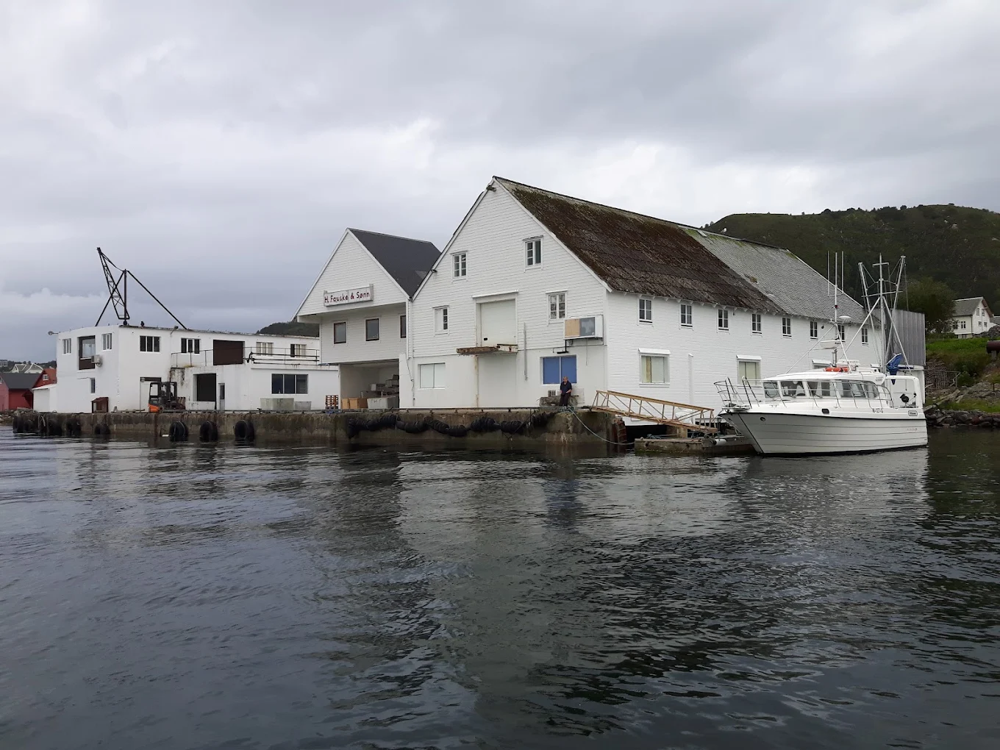

Saltfisk
Tradisjonelt foredlet fisk med lang historie langs norskekysten.
HANS FAUSKE & SØNN AS
Fra kysten på Valderøya – med respekt for råvaren og tradisjonene.
Ta kontaktVÅRE PRODUKTER
Vi arbeider med tradisjonelle norske sjømatprodukter. Ta kontakt for informasjon om sortiment, tilgjengelighet og leveranser.
Tradisjonelt foredlet fisk med lang historie langs norskekysten.

Et klassisk norsk produkt med røtter i kystens historie.

En norsk sjømattradisjon kjent både hjemme og internasjonalt.
Produktbilder er illustrasjonsbilder. Kontakt bedriften for oppdatert produktinformasjon.

OM OSS
HANS FAUSKE & SØNN AS holder til på Valderøya i Giske kommune og arbeider innen foredling av sjømat.
Vi ønsker å ta vare på norsk kysttradisjon og bidra til at klassiske sjømatprodukter når ut til kundene. Ta gjerne kontakt for å høre mer om virksomheten vår.
Kom i kontakt med ossVÅR TILNÆRMING
Vi setter råvaren og godt håndverk i sentrum.
Erfaring og kunnskap er viktig i sjømatfaget.
Forankret i kystsamfunnet på Valderøya.
Kontakt oss for spørsmål om produkter og samarbeid.
KONTAKT OSS
Ønsker du mer informasjon om bedriften eller produktene våre? Vi hører gjerne fra deg.
E-postadresse må legges inn før publisering.